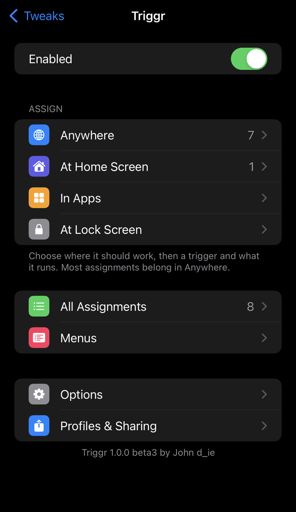
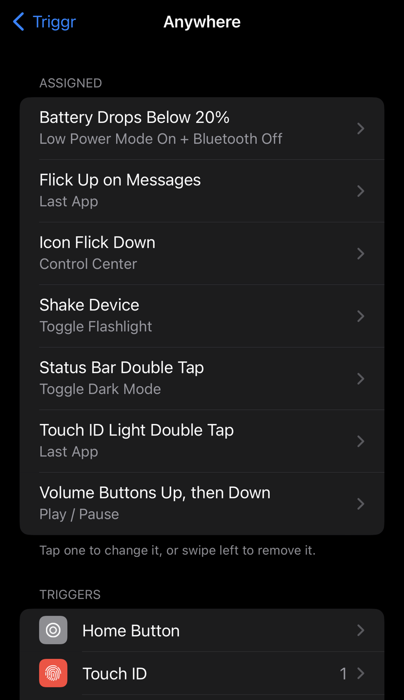
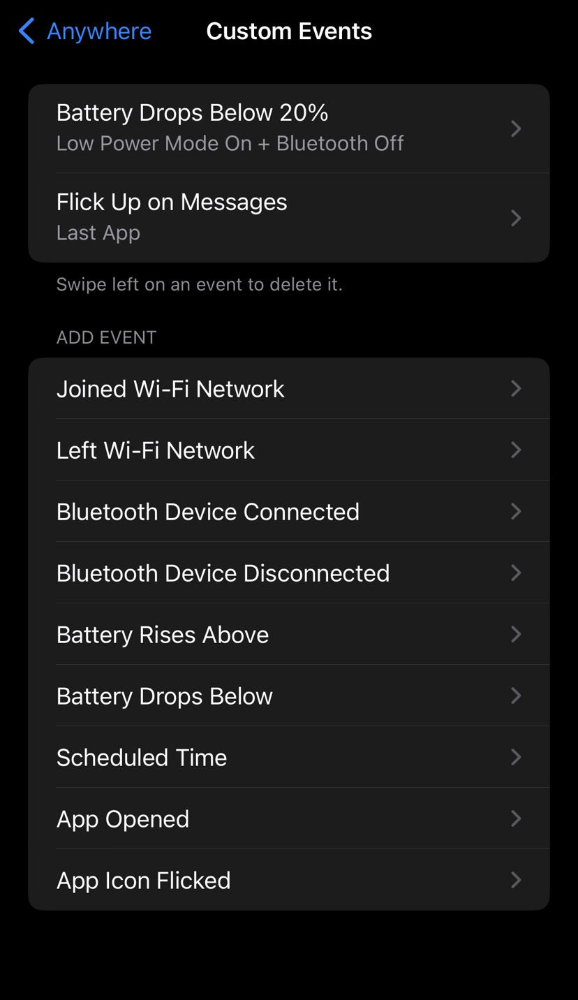
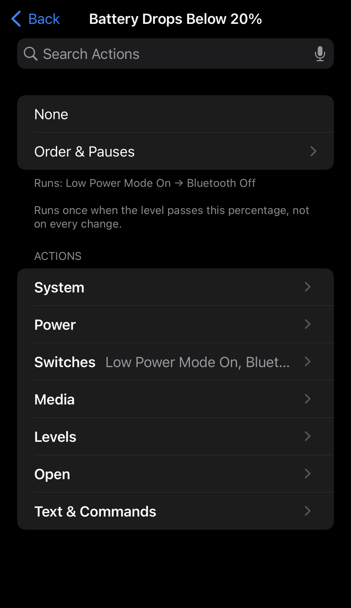
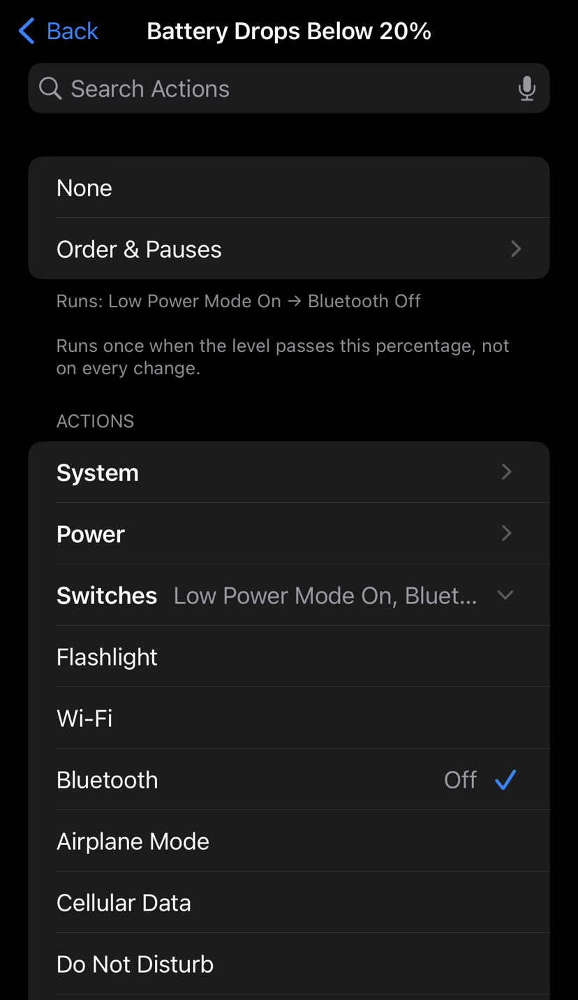
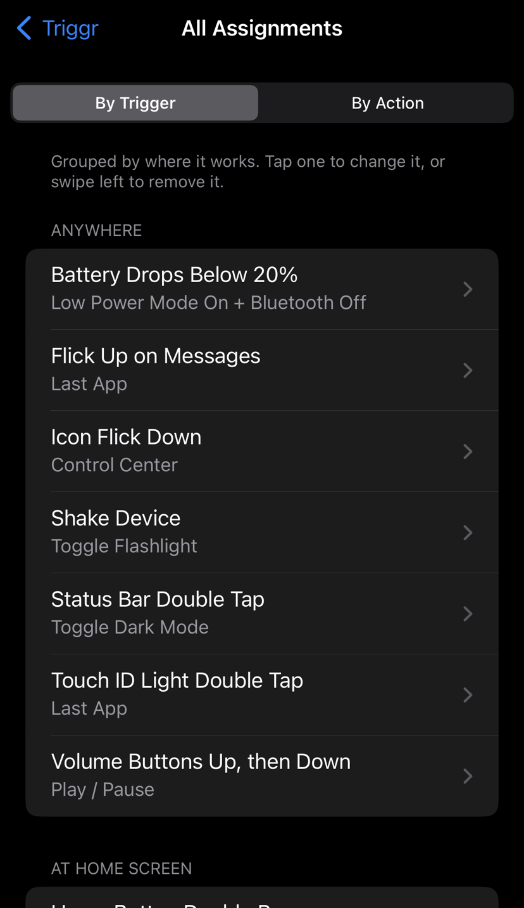
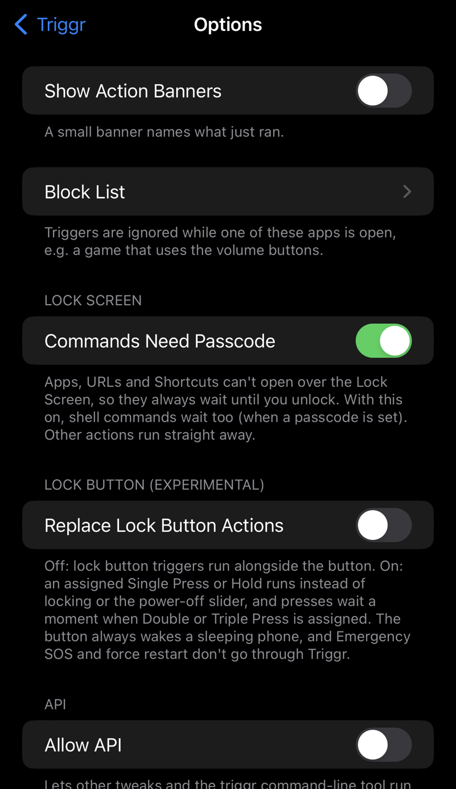

← John's Repo
Triggr
An Activator-lite for rootless Dopamine. Pick a trigger, pick what it runs, in Settings → Triggr. Triggr only changes a button when you assign something to it.







- Triggers: Home button (single, double, triple, short and long hold), Touch ID light double tap, lock button (single, double, triple, hold), volume buttons (presses, holds, up-then-down, both), mute switch, status bar taps, Home Screen icon flicks (any icon or one app's icon), shake, charger and headphones, Wi-Fi / Bluetooth / Low Power / lock / screen changes.
- Custom events: a specific Wi-Fi network or Bluetooth device, battery level, an app opening, a time of day.
- Actions: Home, App Switcher, Last App, Quit App, Control Center, Notification Center, Spotlight, Siri, screenshot, Sleep, Lock, Respring, Power Off Slider, Safe Mode, Restart, Power Off; switches for Flashlight, Wi-Fi, Bluetooth, Airplane Mode, Cellular Data, Do Not Disturb, Low Power Mode, Rotation Lock, Mute, Dark Mode, Night Shift, Auto-Brightness, Keep Screen Awake and Location Services; media controls; brightness and volume levels; apps, URLs, Shortcuts, Settings pages and shell commands; pop-up menus.
- Several actions per trigger, with pauses and reordering.
- Places: Anywhere, Home Screen, In Apps, Lock Screen.
- Extras: block list, action banners, profiles, export / import of setups, an opt-in API and a
triggr command-line tool.
What's New in beta4
- iOS 15 fixes: Sleep works after quick lock button presses, volume up/down, Mute and volume steps work, and Low Power Mode no longer shows a one-time alert.
- Snappier: The lock button waits 0.4 s for another press (was 0.5 s) and volume holds trigger after 0.5 s (was 0.6 s).
- Events: When Triggr changes something itself (say, Wi-Fi), only that kind of event is paused for a second, so other events still run.
- Action picker: Shows what's selected at the top in run order (swipe to remove, tap to find it), Remove All, category icons, order numbers, and categories in search results.
- Settings: Assigned triggers are listed in order (Single, Double, Triple…), and the lock button notes follow Replace Lock Button Actions.
Device Support
arm64 only for now: A11 and older (iPhone 8 / 8 Plus / X and earlier), iOS 15–16.
- A12 and newer (iPhone XS / XR and later): this build refuses to install there, so it can't put them into safe mode. An experimental arm64e build for A12+ is on GitHub (not on this repo). It isn't tested on an A12+ device yet: if it lands you in safe mode, uninstall Triggr from Sileo. Please report how it goes.
- Tested on an iPhone 8 Plus (A11) with iOS 16.7 and an iPhone 7 (A10) with iOS 15.8.6, both on Dopamine.
Beta & Feedback
Triggr is in public beta. Please report bugs, crashes and requests on the Triggr beta GitHub (open an issue), with your device, iOS version, jailbreak and Triggr version.
Notes
- Lock button: runs alongside the button by default. Options → Replace Lock Button Actions (experimental) makes an assigned press or hold run instead of locking, like Activator; add Sleep to lock as well. Emergency SOS is left to iOS, but check it still starts if you rely on it.
- Restart and Power Off act at once and turn the jailbreak off until you run Dopamine again.
- Safe Mode uses ElleKit's own Safe Mode; leave it from its Safe Mode screen.
- Requires AltList (BigBoss) and PreferenceLoader; Sileo installs them automatically.
Credits
Original work by John d_ie, inspired by Activator (Ryan Petrich). Developed with AI assistance (Claude Code) and tested on-device.